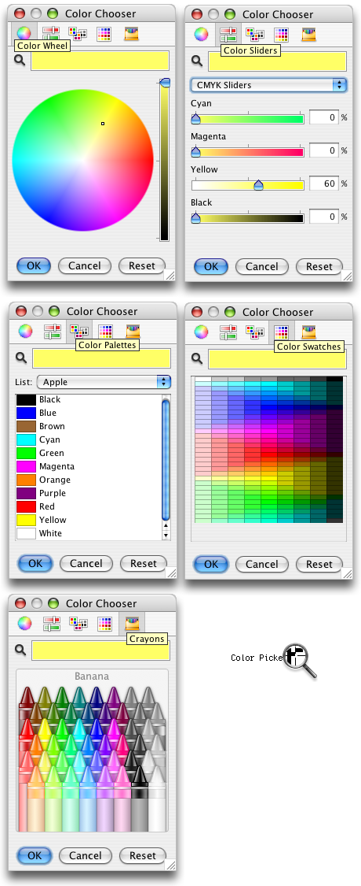

Quaqua's ButtonUI provides a ColorChooserUI that roughly looks and behaves like the native Mac OS X NSColorPicker.
The QuaquaColorChooserUI provides the following panels: Color Wheel, ColorSliders, Color Palettes, Color Swatches, and Crayons.
The Color Sliders panels has four pages: Gray Slider, RGB Sliders, HSB Sliders, CMYK Sliders, and HTML Sliders.
The Color Swatches are not part of the native Mac OS X color picker. They are provided for those who need a consistent color palette across other Java look and feels.
The picture below shows the panels of the color chooser. The magnifying glass can be used to pick a color from anywhere on the screen.
